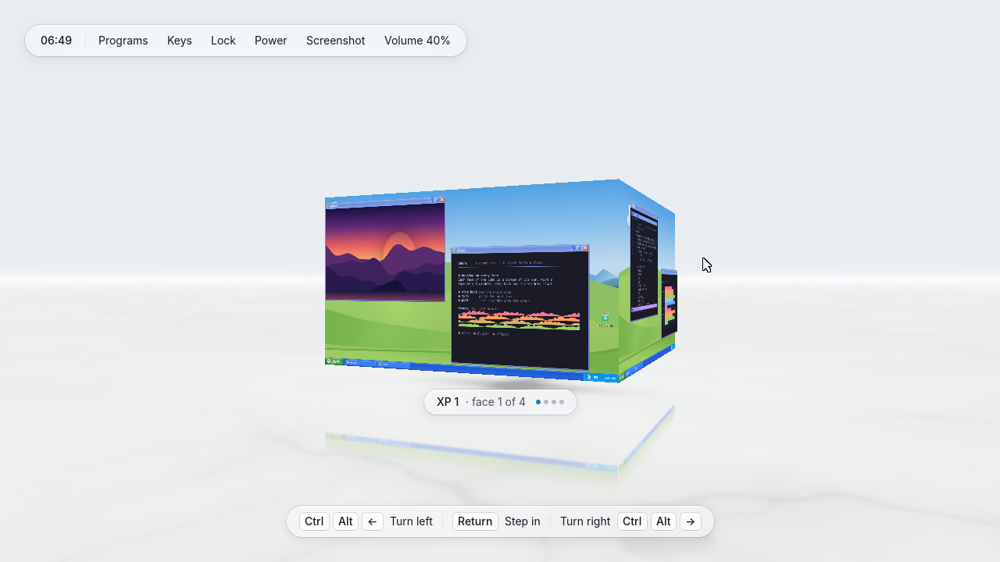

chora · autonomous session · foundation week
Session status
17 %of the week used (owner, 10:39 UTC; another agent included)
~2 %/hpace to use the week by Sat 03:59 UTC (41 h left)
6lanes (4 sonnet, 2 opus); resumed 10:53 UTC after the 5-hour limit
27green trains on the session branch
Foundation F1-F8 (met only with a measure and an independent check)
| # | Goal | State | Where |
|---|---|---|---|
| F1 | Plan in merge-sized slices | done | reviewed plan; slices by rank |
| F2 | Shared core in chora-kit, no copies | open | KIT1-2, KIT2b, KIT4 in; KIT2c in train 61; KIT2d next train; KIT3, KIT5 running |
| F3 | WM core designed, first slice in | open | WM1, WM1b-c in; WM1d, WM2 in train 61; WM3 r2, WM5 review, WM7a r3 running; WM7b hosted cube (your choice, 10:52) next |
| F4 | No file over 1,500 lines; debt down | open | size ratchet in the gate |
| F5 | Tests: kit coverage ≥ 80 %, no flaky gate | open | flakes-f running (F21 pull flake) |
| F6 | Every slice through the merge gate; cut gate | partly | CUT1-2 in; trains batch MERGE-OK branches |
| F7 | No regression against tour v8 | open | tour v9 next week |
| F8 | Docs and decision records | open | DOCS-F8 in; DOCS-F8b in train 61 |
Merge trains today (UTC)
| Train | Branches | Result |
|---|---|---|
| 59 | cut2, net3 | green 4548feb3 |
| 60 | mv4, wm2 | red pull flake (F21); passes alone |
| 61 | 60 + kit2c, docs-f8b, wm1d | running since 10:33 |
| 62 | kit2d (MERGE-OK), wm7a r3 | next |
Lanes
| Lane | Goal | Model | Since |
|---|---|---|---|
| flakes-f | F5: no flaky gate | opus high | 07:37 |
| kit5 | F2 | sonnet high | 07:40 |
| wm5 | F3 | opus high | 09:42 |
| kit3 | F2: key sheet from the bindings | sonnet high | 10:06 |
| wm7a r3 | F3: cube acts merge | sonnet high | 10:30 |
| wm3 r2 | F3: review fixes (I12 check) | sonnet high | 10:35 |
Needs you
- Delete branch
claude/release-rc4in GitHub (the session's push is refused).
Baseline: tour v8 (no visible change allowed this week)


